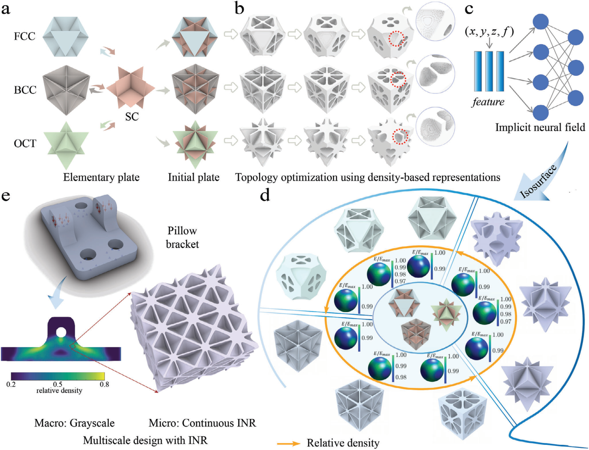
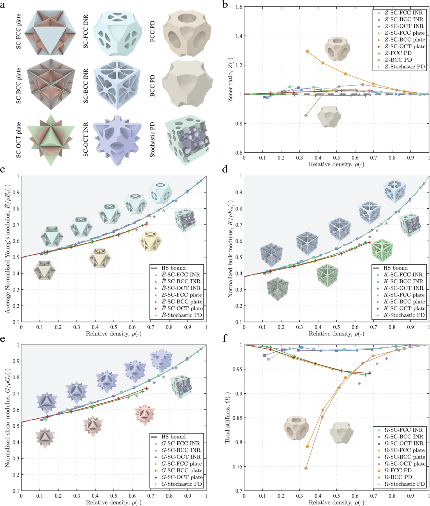
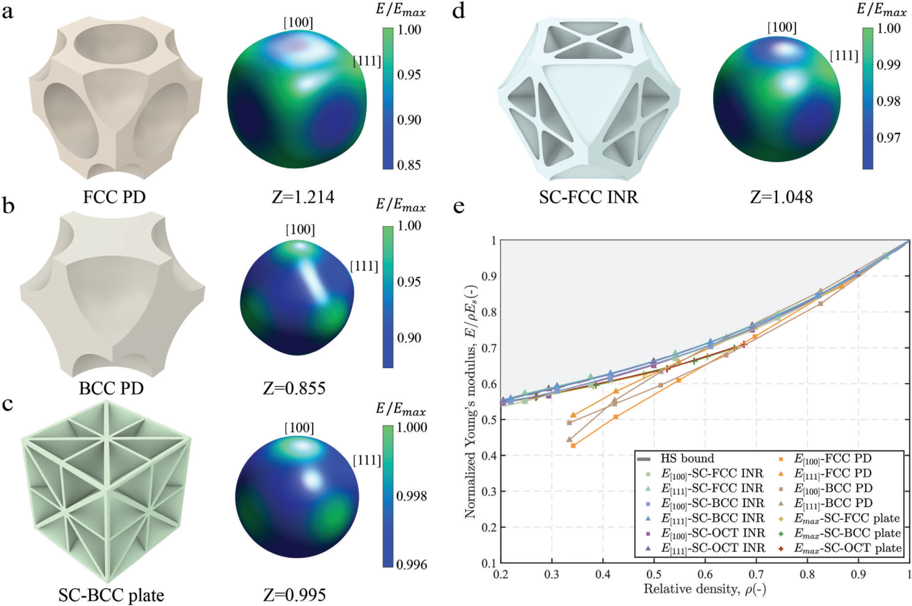
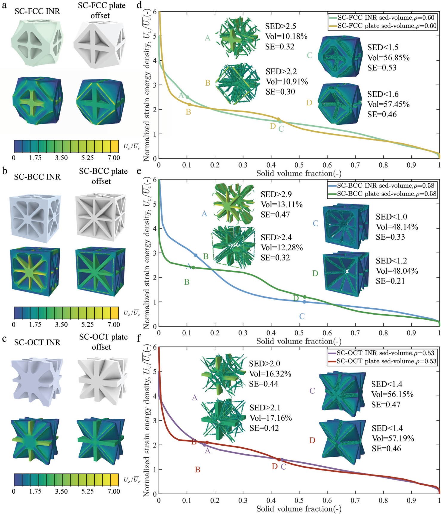
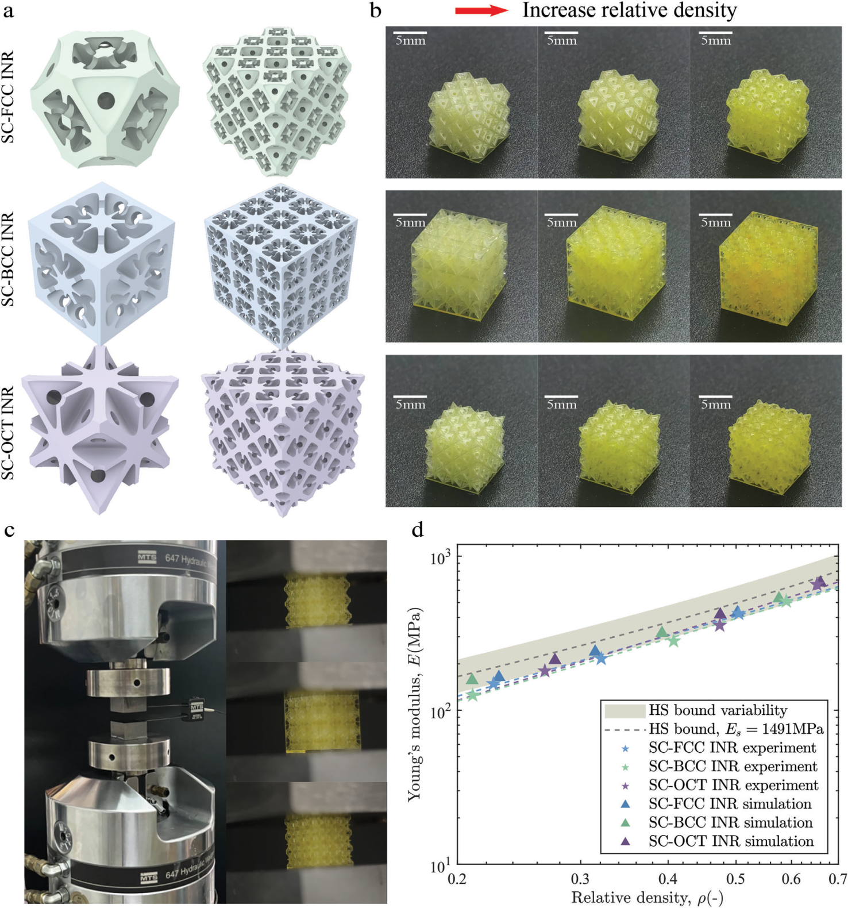

Near-isotropic, Extreme-stiffness, Continuous 3D Mechanical Metamaterial Sequences Using Implicit Neural Representation
Advanced Science · 12(3), e2410428 (2025)
First published online November 27, 2024

Abstract
Designing continuous metamaterial sequences is challenging: as relative density changes, the geometry must vary smoothly while each design retains high stiffness in every direction. This work combines topology optimization and data-driven modeling to create three near-isotropic 3D sequence families. Across relative densities from 0.2 to 1, their stiffness exceeds 98% of the Hashin–Shtrikman upper bound in the least favorable direction. An implicit neural representation describes each sequence continuously, and experiments demonstrate that the designs can be manufactured and retain high stiffness.
Keywords: Extreme stiffness; implicit neural representation; isotropic metamaterials; metamaterial sequences.
Three metamaterial sequences
The study combines topology optimization with data-driven design to construct three continuous families: SC–FCC, SC–BCC, and SC–OCT. The sequences are built from simple-cubic plates combined with face-centered-cubic, body-centered-cubic, or octahedral plate structures. Their geometries vary with relative density while maintaining near-isotropic mechanical behavior.
The designs target stiffness close to the Hashin–Shtrikman theoretical upper bounds over a broad density range. This lets a single sequence provide a continuum of structures for applications that need stiffness to change gradually through a part.

Implicit neural representation
Each sequence is represented as a continuous implicit function rather than as a single fixed-resolution voxel model. A multilayer perceptron approximates the structure across spatial coordinates and relative density, so a design can be sampled at the resolution needed for analysis or fabrication. This representation supports smooth transitions between neighboring density levels.
Stiffness and experimental validation
Across relative densities from 0.2 to 1, all three sequences reach more than 98% of the Hashin–Shtrikman upper bounds in the least favorable direction. The comparison with plate and porous baselines also shows that the INR sequences retain near-isotropy and high normalized stiffness as density changes.



Experimental validation
The authors fabricated lattice arrays using projection micro stereolithography and tested them in compression. The measured Young's moduli follow the simulated trends across the tested density range, supporting the manufacturability and mechanical response of the three sequence families.

BibTeX
@article{zhao2025nearIsotropic,
title = {Near-Isotropic, Extreme-Stiffness, Continuous 3D Mechanical Metamaterial Sequences Using Implicit Neural Representation},
author = {Zhao, Yunkai and Wang, Lili and Zhai, Xiaoya and Han, Jiacheng and Ma, Winston Wai Shing and Ding, Junhao and Gu, Yonggang and Fu, Xiao-Ming},
journal = {Advanced Science},
volume = {12},
number = {3},
pages = {e2410428},
year = {2025},
doi = {10.1002/advs.202410428}
}